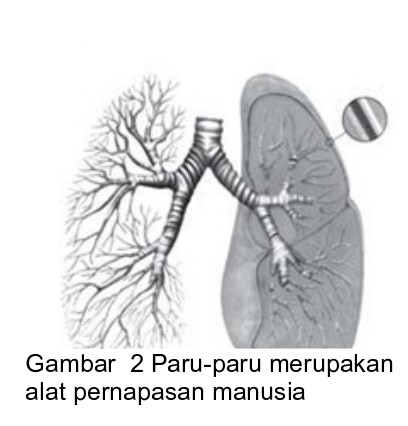
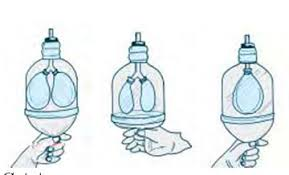
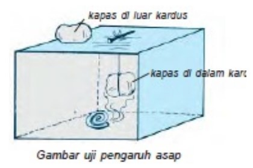

A. Organ Pernapasan Manusia
Bernapas merupakan salah satu ciri makhluk hidup. Untuk melakukan pernapasan, makhluk hidup memerlukan alat-alat pernapasan. Alat pernapasan pada tiap makhluk hidup memiliki bentuk dan fungsi yang berbeda-beda. Bagaimanakah proses jalannya pernapasan manusia?
Ketika kamu menghirup oksigen, oksigen itu masuk melalui hidung dan turun ke paru-paru kanan dan paru-paru kiri melalui kedua cabang tenggorokan yang disebut bronkus. Bronkus yang terletak di dalam paruparu ini bercabang-cabang lagi menjadi bagian lebih kecil yang disebut bronkiolus. Di ujung bronkiolus ini terdapat gelembung-gelembung udara yang disebut alveolus. Nah, di dalam alveolus inilah terjadi pertukaran oksigen dengan karbon dioksida dan uap air.
Pada saat menghembuskan napas, kamu mengeluarkan gas karbon dioksida (CO2) dan uap air (H2O). Bagaimana membuktikan bahwa ada uap air saat kamu bernapas? Agar mengetahuinya, lakukanlah kegiatan berikut ini!

|
Tujuan
Alat dan Bahan
Cara Kerja
|
- Bagaimanakah keadaan cermin setelah napas kamu hembuskan ke permukaannya?
- Apa yang menyebabkan keadaan cermin demikian?
Kesimpulan
Cermin tampak karena tertutup oleh
Berat sepasang paru-paru orang dewasa lebih kurang 1 kg dan dapat menampung kira-kira 5 liter air.
Tujuan
Siswa dapat mengetahui saat bernapas kamu mengeluarkan gas karbon dioksida.
- dua buah gelas
- sebuah sedotan plastik
- air
- kristal kapur atau gamping
- ember kecil
- Buatlah larutan kapur di dalam ember kecil.
- Diamkan beberapa saat hingga airnya jernih.
- Tuangkan larutan kapur itu ke dalam gelas A dan B kira-kira setengah gelas secara perlahan.
- Masukkan sedotan plastik pada gelas A.
- Hiruplah udara sedalam-dalamnya melalui hidung. Hembuskan napasmu secara
- perlahan-lahan melalui sedotan plastik yang ada di mulutmu.
- Lakukan secara berulang-ulang pada gelas A tadi.
- Amatilah warna larutan pada gelas A, kemudian bandingkan tingkat kejernihan dengan larutan pada gelas B
- Bagaimana keadaan air pada kedua gelas tersebut?
- Apa yang menyebabkan air pada gelas A demikian?
- Setelah gelas A kamu diamkan beberapa saat, pada dasar gelas A akan terdapat apa?
- Dari manakah asal endapan itu?
- Sebutkan nama endapannya!
Kesimpulan
Air pada gelas A menjadi , karena dan membentuk endapan
- Paru-paru manusia mempunyai kira-kira 2400 km saluran udara.
- Setiap permukan paru-paru manusia mempunyai luas 180 m2.
- Ada sekitar 300 juta gelembung paru-paru dan bila diratakan dapat menutupi kira-kira satu daerah lapangan tenis.
|  |
Sehabis berolahraga, kita merasa terengah-engah kelelahan. Gerakan napas itu merupakan pekerjaan otot-otot antar tulang rusuk yang disebut interkostal dan diafragma. Saat kita menghirup napas, otot tertarik ke bawah sehingga dada menyempit, seperti balon yang dikempeskan. Kemudian paru-paru kembali ke ukuran semula setelah mengeluarkan udara yang ada di dalamnya. Apabila yang dominan adalah otot interkostal, maka pernapasannya disebut pernapasan dada.
|
Kerjakanlah secara berkelompok!
Tujuan
Siswa dapat mengetahui alat pernapasan manusia.
- Amatilah gambar alat pernapasan manusia di samping.
- Diskusikanlah dengan temanmu, kemudian isilah tabel seperti berikut sesuai hasil diskusi
Tabel 1 Alat Pernafasan
| Nomor | Nama Organ | Fungsi Organ |
|---|---|---|
| 1 |
- Sebutkan urutan alat pernapasan manusia!
- Di manakah pertukaran oksigen dengan karbon dioksida dan uap air terjadi?
- Apa yang terjadi pada bagian berikut ketika kamu sedang menghirup napas?
- otot interkostal
- diafragma
- tulang rusuk
- dada
- Apa yang terjadi pada bagian berikut ketika kita sedang menghembuskan napas?
- otot interkostal
- diafragma
- tulang rusuk
- dada
- Alat pernapasan manusia terdiri atas
- Pertukaran gas (oksigen dengan CO2 dan H2O) terjadi di
- Mekanisme pernapasan pada manusia ada dua yaitu pernapasan dan pernapasan
Rata-rata manusia menarik dan menghembuskan napas 12-15 kali per menit dalam keadaan normal dan 80 kali per menit selama berolahraga.
Pernahkah kamu bernapas melalui mulutmu? Bagaimana rasanya? Menurutmu apakah baik bernapas melalui mulut? Coba Jelaskan!
Pernahkah kamu bernapas melalui mulutmu? Bagaimana rasanya? Menurutmu apakah baik bernapas melalui mulut? Coba Jelaskan!
|
Tujuan
|
 |
- Ambillah bagian atas botol + 20 cm dengan cara memotong bagian bawahnya
- pasanglah balon pada kedua ujung pipa Y sepertipada gambar di samping.
- Masukkanlah ujung pipa yang lain ke dalam mulut botol melalui bagian bawah botol.
- Tutuplah rapat-rapat celah botol dengan lilin mainan.
- Potonglah balon ketiga dan pasanglah menutup dasar botol. Perhatikan gambar di samping.
- Ujilah model paru-paru tersebut dengan menarik balon di dasar botol, kemudian melepaskan tarikan, lakukanlah berulang-ulang.
- Ujilah model paru-paru tersebut dengan menarik balon di dasar botol, kemudian melepaskan tarikan, lakukanlah berulang-ulang.
Apabila tidak tersedia pipa Y, kalian dapat membuat model paru-paru tungga dengan memakai sedotan sebagai pengganti pipa Y.
- Apa yang ditunjukkan oleh kegiatan ini? Jelaskan!
- Organ tubuh apakah yang ditunjukkan oleh kedua balon pada pipa?
- Apakah fungsi lilin mainan pada kegiatan ini?
- Kerja bagian tubuh manusia manakah yang ditunjukkan oleh lapisan balon pada alas botol?
Jalannya proses pernapasan manusia adalah dari
Tahukah kamu bahwa sebagian udara yang kita hirup sebenarnya udara yang telah tercemar? Pencemaran udara dapat disebabkan oleh asap pabrik, asap kendaraan bermotor, asap rokok, dan lain-lain. Udara tercemar tersebut banyak mengandung kotoran yang dapat menyebabkan gangguan pada alat pernapasan. Marilah kita mencoba kegiatan berikut ini untuk membuktikan bahwa udara tercemar akan menyebabkan gangguan pada alat pernapasan!
Kerjakanlah secara berkelompok!
|
Tujuan
Alat dan Bahan
|
 |
- Bakarlah obat nyamuk.
- Letakkan obat nyamuk tersebut ke dalam kardus.
- Ikatlah segenggam kapas dengan benang jahit.
- Gantungkan kapas tadi ke dalam kardus.
- Amatilah apa yang terjadi selama + 10 menit.
- Tulislah hasil pengamatanmu ke dalam tabel pengamatan.
Tabel Pengamatan
| Nomor | Benda yang diamati | Keadaan |
|---|---|---|
| 1 | Kapas di luar kotak kardus. | |
| 2 | Kapas dalam kardus yang berisi asap obat nyamuk. |
- Apakah perbedaan kapas yang diletakkan di luar dan yang diletakkan di dalam kardus yang berisi asap obat nyamuk?
- Jelaskan hal tersebut dapat terjadi!
- Udara yang kita hirup dapat bercampur dengan asap atau bermacam-macam kotoran, membuktikan bahwa udara tersebut sudah
- Udara yang sudah tercemar bila kita hirup akan menyebabkan gangguan pada
- Ciri-ciri udara bersih yaitu
- Ciri-ciri udara kotor yaitu
Alat pernapasan manusia terdiri atas hidung, tenggorokan, dan paru-paru. Apabila kamu biarkan tercemar, maka alat pernapasan akan mengalami rawan penyakit, di antaranya flu, asma, bronkitis, TBC (tuberkulosis), flu burung, pneumonia, dan lainlain. Oleh karena itu, marilah kamu rawat alat pernapasan yang kamu miliki agar kamu senantiasa sehat!
Tujuan
Siswa dapat mengetahui kebiasaan yang memengaruhi kesehatan alat pernapasan.
- Carilah informasi sebanyak-banyaknya tentang kebiasaan yang dapat memengaruhi kesehatan alat pernapasan manusia.
- Isilah tabel seperti berikut.
Tabel Pengamatan
| Nomor | Kebiasaan yang Baik | Kebiasaan yang Tidak Baik |
|---|---|---|
- Bagaimana cara memelihara kesehatan alat pernapasanmu?
- Penyakit apa sajakah yang dapat menyerang alat pernapasan manusia?
- Makan makanan bergizi, berolahraga teratur, istirahat cukup, menjaga kebersihan, menjauhi asap rokok merupakan cara untuk
- Influenza, flu burung, pneumonia, TBC, asma, bronkitis merupakan penyakit yang dapat menyerang